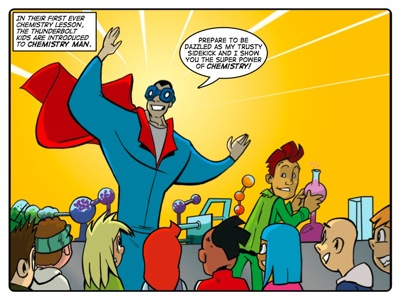
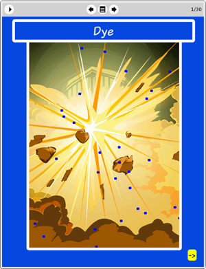

Story: Chemistry Man
Theme: Being precise in your thinking.
Synopsis
The Thunderbolt Kids have their first ever chemistry lesson. The lesson is led by Chemistry Man, who is dressed as a kind of caped superhero. While he preaches about the necessity of precise, logical thinking in Chemistry, his assistant puts on a chemical firework show behind him, which dazzles the kids. But after lunch break Chemistry Man returns in a completely different mood. He backtracks on everything he said during the morning and breaks every rule that he set up as gospel. Realising that something has gone wrong, the Thunderbolt Kids attempt to save the day.
This story contrasts the difference between precise, logical thinking, and imprecise, irrational thinking by showing what happens when a chemist goes a little nuts. The effects of sloppy thinking are not always obvious, but in this context the difference between being precise and being sloppy is dramatic and catastrophic.
Activity
This activity challenges learners to open containers with strong-smelling contents and then to time how long it takes for the smell to travel from the front of the classroom to where they are sitting.
The purpose of the activity is to introduce learners to a simple chemical experiment. This particular experiment is usually done at high school level when introducing brownian motion, but there is no reason that learners can't do the experiment in the intermediate phase and derive some positives out of it. It also serves as an introduction to the eToys exercise which focuses on a plug-in that allows learners to explore particle behaviour.
In doing this activity we want learners to recognise that different substances have different properties and exhibit different characteristics with regard to smell.

The eToys project:
DyeIn this project Sophie shows learners how to use the eToys Kedama plugin to model the diffusion of dye in water. Sophie shows learners how to use a patch and turtles to create the effect of dye being released in water.